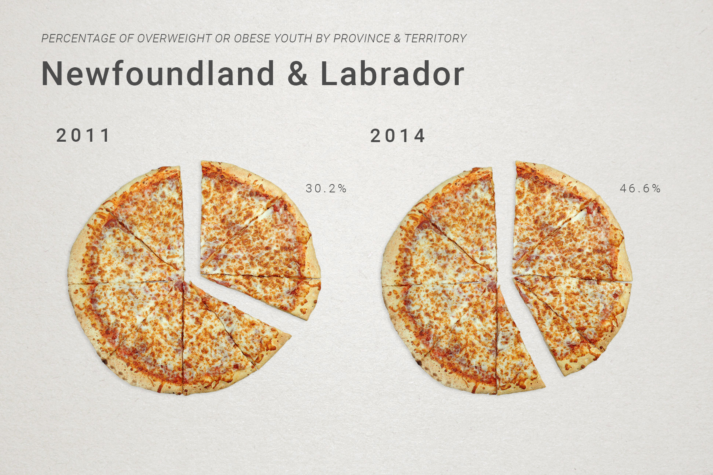
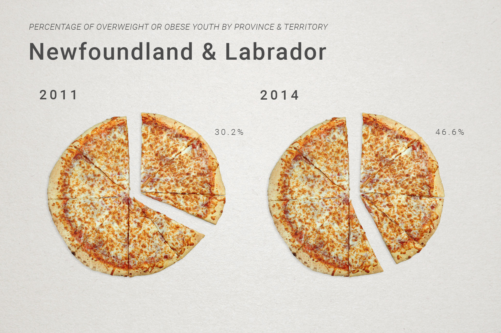

Rebecca Malagisi
Rebecca Malagisi
December 2016
Object infographics about the percentage of overweight or obese youth by province & territory using research from Statistics Canada. Throughout most of the data research, we found that teenagers between the age of 12 and 17 years old - while being statistically leaner than Canadian adults - have a greater weight fluctuation between the documented years. Bad eating habits and lack of physical activity are the two main causes of excess weight in youth, therefore we represented selected provinces/territories with different types of fatty foods to display our information. We used pizza represented as a pie chart to show the fluctuation of weight; the chips are represented as a pile with the exact number of chips as data percentage; and finally, the chocolate bar and fries are represented as bar graphs.
Technical - Photography, Adobe Photoshop, Adobe InDesign
Sabrina Emanuele - data collection, infographic design
Rebecca Malagisi - data collection, photography, photo editing, infographic design
All - concept development
 
